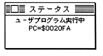
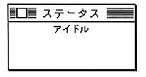

The following is displayed during execution of the user program.

When the user program is stopped, the following is displayed.

However, even if the software break does not reach the pass count and the break does not occur, the idle display or debugger program PC display may be temporarily displayed even in situations where the user should normally execute.